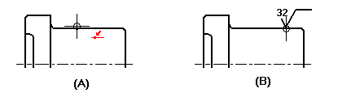

Place a surface texture symbol
-
Choose the Surface Texture Symbol command .
-
In the Surface Texture Symbol Properties dialog box, set the options you want to use.
-
Click a linear element that you want to place a surface texture symbol on (A).

-
Click the point on the linear element where you want to place the surface texture symbol (B).
-
After you click the linear element, you can control which side of the element the surface texture symbol is placed on by positioning your cursor on that side of the element.
-
To place a model PMI annotation that references multiple elements instead of a single element, click Referenced Geometry
 on the command bar. To learn how to use this option, see Select multiple reference elements.
on the command bar. To learn how to use this option, see Select multiple reference elements. -
If you move your mouse cursor off the end point of the element you clicked, the software automatically creates an extension.
-
You can also place surface texture symbols that have leaders.
-
You can also place an empty surface texture symbol or a surface texture symbol without a point or leader.
-
You can double-click a surface texture symbol to edit its properties.